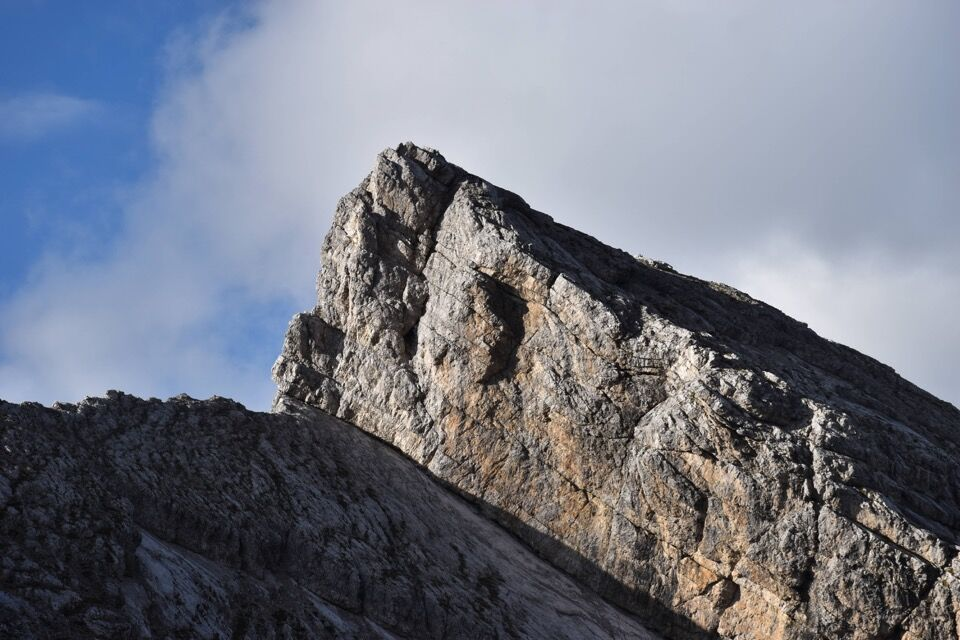
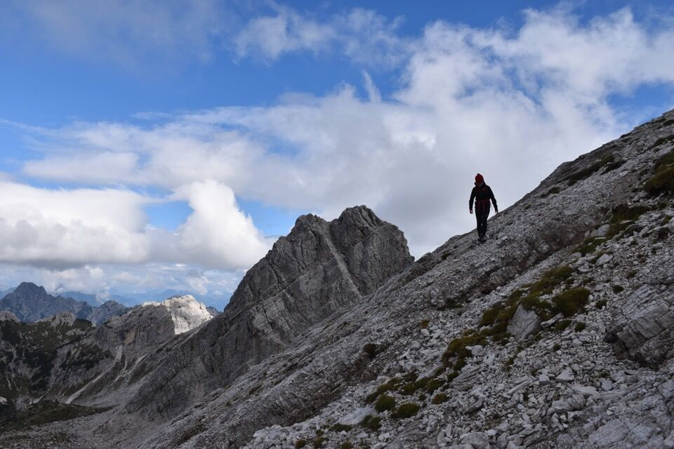

Facile ma sempre strettissima, questa cengia mi sembra un miracolo della natura: non solo per il fatto che sia percorribile, ma che pure ci sia uno sbocco verso l'alto con difficoltà quasi escursionistiche. Fatte di camoscio su tutto il percorso.
Forse sarebbe idealisticamente più opportuno partire dalle Grave di Gere: preferisco guardare il faccia il monte da salire. Conosciamo almeno due modi sia per arrivare alla cengia che per scendere dalla Frata de Barbin. Qui c'è da sbizzarrirsi!
Una fresca mattina di settembre ci vede in cammino in val de la Meda.

Molto belle le placconate del nostro monte.
Anche il Cimon de le Tempie fa la sua sporca figura.

Fra i due la forcella Savalòn. Ma... perché fare il giro del mondo? Bella domanda.
Le selvagge crode clautane.
Dalla forcella ad ovest di Cima Podestine iniziamo a scendere, basandoci su alcune foto che avevo scattato dai monti vicini.
Sperin ben...
Di là vediamo il grandioso itinerario da sud a Cima della Meda che abbiamo percorso a maggio.
Agguantata la cengia.
Sempre strettissima.


La cengia va a sbattere contro il superbo diedro sud del Cornaget.


E via su per simpatici canalini.
Meglio evitare gli strapiombi cercando i punti più facili.
Questi sono i canalini (foto d'archivio dalla Frata de Barbin). A 2/3 abbiamo preso quella fessura obliqua (vedi foto precedente).


Per me la prima volta sul Cornaget, per Greta la terza.
Prossimo giro?

Cima di Bortolusc illuminata dietro al Bus de Nefe.


Pure qualcuno sulla Frata de Barbin.

Scorci di grande bellezza nel Ciadin de la Meda.

***
La prima salita alpinistica del Cornaget avvenne il 3 luglio 1891 ad opera di Arturo Ferrucci e Fabio Luzzatto (soci della SAF) e il goriziano Antonio Seppenhofer (socio della SAG di Trieste), con la guida clautana Alessandro Giordani Nathio (così chiamato per via del padre Ignazio).
Essi, partiti alle 3 antelucane da casera Podestine ove pernottarono, raggiunsero alle 7:30 forcella Pregoiane, da cui si spostarono al Bus de Nefe (alias forcella della Meda). Indi traversarono tutto il Ciadin de la Meda e salirono per l'odierna via comune lungo le placconate nord del monte arrivando in cima alle ore 10. Effettuarono poi la discesa in val de la Meda.
Da notare (qui l'articolo) che Ferrucci non parla mai di «Cornaget» ma tutt'al più di «Cima della Meda», intendendo però con questo il Cornaget odierno. Certo, c'è da dire che verrebbe naturale il fatto che la vetta più alta che sovrasta il Ciadin sia detta «Cima della Meda». In alcune carte antiche il monte — collettivo per l'intera zona — è denominato «M. Pregajane» (o Pregoiane). La toponomastica è un argomento davvero complesso e interessante.
Alessandro Giordani, montanaro di razza e cacciatore, era l'unica guida alpina patentata della SAF, a differenza ad esempio del nipote Luigi Giordani Begarèli (il «re della Vacalizza»).
Egli era guida stimata e raccomandata; accompagnò i primi alpinisti udinesi sulle maggiori montagne Clautane: Monfalcon di Montanaia, Cima dei Preti, Pramaggiore, Cima di Brica, Cima di Bortolusc, ecc. Nel 1899-1900 è il turno degli illustri austriaci Steinitzer e Reitreischer: su Caserine Basse (per cresta sud), sulla muraglia del Resettùm, Dosàip e Cima Laste, solo per citarne alcune. Accompagna pure Lothar Patéra: sul Burlatòn (da forcella del Cuèl) e su Vetta Fornezze (da Senons).
T'invito ad approfondire l'argomento leggendo l'ottimo volume Guide alpine, portatori e portatrici nelle Prealpi Clautane (1874-1915) di Mario Tomadini. Così come imprescindibile è il libro Esplorazione alpinistica delle montagne della val Cellina di Tullio Trevisan.
***